This Month in Rust GameDev #41 - December 2022
Welcome to the 41st issue of the Rust GameDev Workgroup's monthly newsletter. Rust is a systems language pursuing the trifecta: safety, concurrency, and speed. These goals are well-aligned with game development. We hope to build an inviting ecosystem for anyone wishing to use Rust in their development process! Want to get involved? Join the Rust GameDev working group!
You can follow the newsletter creation process by watching the coordination issues. Want something mentioned in the next newsletter? Send us a pull request. Feel free to send PRs about your own projects!
- Announcements
- Game Updates
- Engine Updates
- Learning Material Updates
- Tooling Updates
- Library Updates
- Other News
- Discussions
- Requests for Contribution
Announcements
Rust Graphics Meetup 3
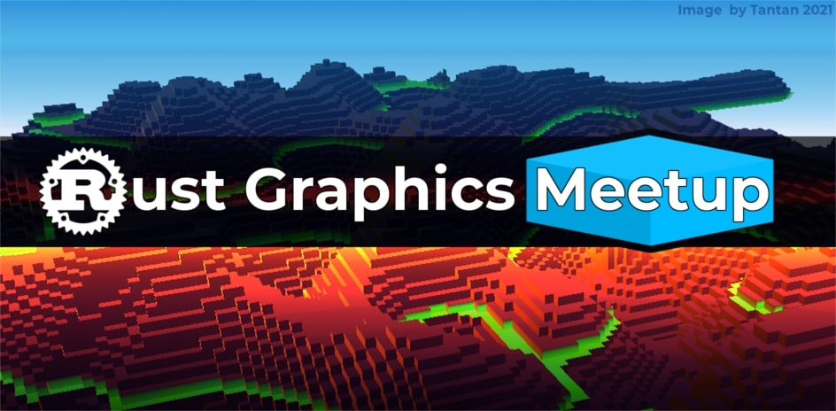
The 3rd Rust Graphics Meetup will take place on the 28th of January 2023 at 16:00 GMT. This meetup is a chance to show off what you've been working on in the graphics community, or see what other people have been doing!
If you're interested in speaking, please add a comment to this issue. You can also read about the previous graphics meetup.
Rust GameDev Meetup

The 22nd Rust Gamedev Meetup took place in December. You can watch the recording of the meetup here on Youtube. Here was the schedule from the meetup:
- Fyrox Engine - @dmitrynstepanov
- Rusty Vangers - @kvark
- Graphite - @GraphiteEditor
The meetups take place on the second Saturday of every month via the Rust Gamedev Discord server and are also streamed on Twitch. If you would like to speak at the next meetup on January 14th, please respond to the monthly GitHub issue.
@rust_gamedev Mastodon Feed
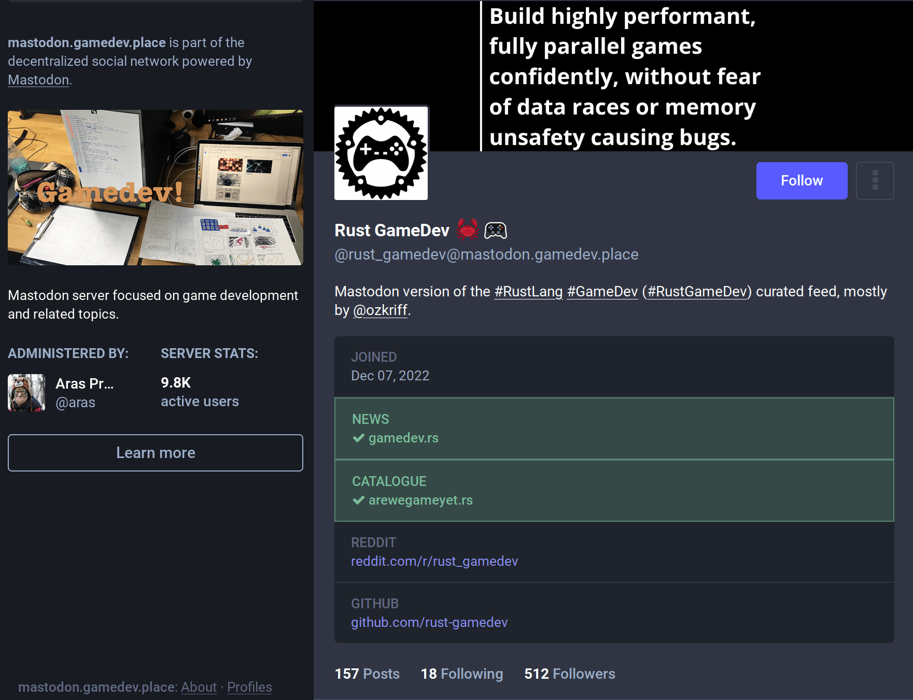
As you may know, we have a @rust_gamedev Twitter account for making announcements and collecting all the cool rust gamedev stuff there into one feed.
In the last couple of months a significant portion of rust game developers has either migrated from Twitter to Mastodon or started cross-posting there, so we've decided to create a similar "official" @rust_gamedev account on the mastodon.gamedev.place server.
Please follow us there and post your own relevant updates on Fediverse using either the #RustGameDev tag or #RustLang #GameDev combo.
Discussions: /r/rust_gamedev
Game Updates
Digital Extinction
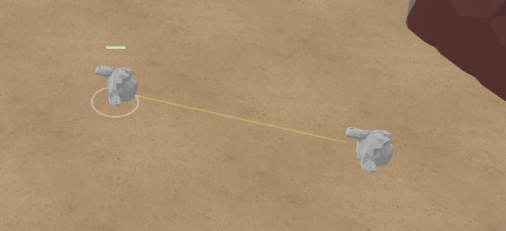 Laser trail in Digital Extinction
Digital Extinction (GitHub, Discord, Reddit) by @Indy2222 is a 3D real-time strategy game made with Bevy.
This month's update is somewhat smaller but there has been some important progress in multiplayer.
The most notable updates are:
- game configuration is loaded from a file (docs),
- a simple game lobby server has been created (docs),
- a Bevy plugin with the lobby client has been implemented,
- several minor community, infrastructure, and other improvements have been done.
A more detailed update summary is available here.
Open Combat
 Game now includes vehicle (T-26) and shelling FX
Game now includes vehicle (T-26) and shelling FX
Open Combat (Website, GitHub, Discord) by bux is a real time tactical game which takes place during the 2nd world war.
Since the last news about this game, the game engine has been rewritten to permit multiplayer. Most of the basic game engine features have been rewritten with the new engine (soldier moves, visibilities, map, etc.). Vehicle concept has been introduced to a T-26 tank. Basic fight features like gunfire and shelling have been introduced.
Tiny Glade
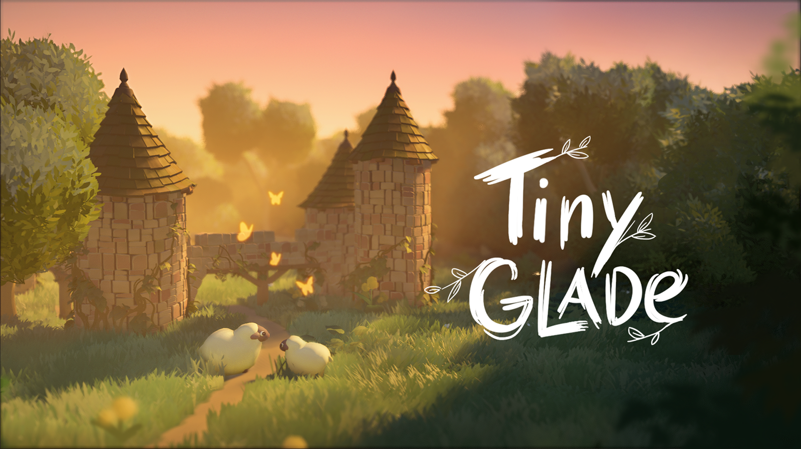
@anopara's and @h3r2tic's tiny building game now finally has a name! It's Tiny Glade!
Tiny Glade is a small relaxing game about doodling castles. Explore gridless building chemistry, and watch the game carefully assemble every brick, pebble, and plank. There's no management, combat, or wrong answers - just kick back and turn forgotten meadows into lovable dioramas. Wishlist on Steam!
Temple Knight
 Shooting automatons in Temple Knight
Shooting automatons in Temple Knight
Temple Knight (Itch.io, Twitter) by @nilaysavant is a 3D FPS game developed using Bevy. You play the role of a knight and protect the temple from raiding automatons.
What began as an experiment to learn game dev in Rust using Bevy. Initially motivated by the visual appeal of a scene running in the browser via WASM. It quickly started taking the shape of a game:
- From adding Rapier for basic physics to developing mechanics for other entities.
- Path finding for Automaton's using control systems.
- Which was later switched to a deterministic A-start navmesh approach.
- Developed mechanics for the player controller including the first-person-camera.
- Implemented weapon + projectiles systems.
- Finally, custom shaders for projectiles were added as a finishing touch.
An experiment that became the first game published by @nilaysavant. Play Temple Knight in your browser.
Cargo Space

Cargo Space (Discord) by @johanhelsing is a co-op 2d space game where you build a ship and fly it through space looking for new parts, fighting pirates and the environment.
Johan wrote an introductory post about the design idea, and a tentative plan for its development.
The first step was to make an initial offline single-player prototype. This is covered in the first devlog along with topics such as procedural generation, 2d platforming, bloom, and various community Bevy crates, such as bevy_ecs_tilemap, bevy_ecs_ldtk and bevy_particle_systems.
The procedural generation needs for the game also resulted in a new crate being born. noisy_bevy is a CPU and GPU noise plugin for Bevy.
After this, p2p rollback networking was added using bevy_ggrs and Matchbox. The second devlog goes through this in detail, and in particular how integration between bevy_ggrs and leafwing_input_manager was implemented.
8bit Duels
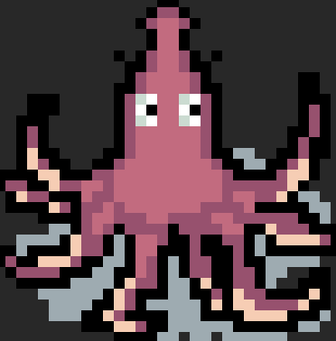 The newly added Kraken
@ThousandthStar is creating 8bit Duels (Discord, Github), an 8bit style turn-based multiplayer strategy game.
Last month, an artist joined ThousandthStar to create art for the game. A testing server has now been set up (more information is in the Discord server).
Furthermore, these three new troops have been added to the game: Reaper, Kraken, and Spider. The game now also includes new abilities for the various troops to come.
The full devlog for this month can be found here.
Flesh
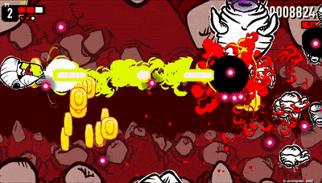 more blood
Flesh by @im_oab is a 2D-horizontal shmup game with hand-drawn animation and an organic/fleshy theme. It is implemented using Tetra. This month's updates include:
- Change player bullet color and add trail particle.
- Add SFX when special weapon ready.
- Increase blood splash particles.
- Postpone release date to Q1, 2023.
Pirate Annihilation
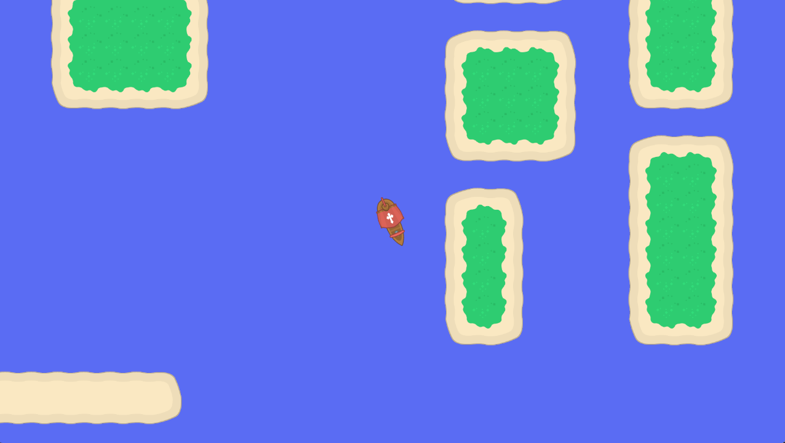 Pirate annihilation game view, asset pack by Kenney
Pirate Annihilation (GitHub, Twitter) by indiedevcasts (@theredfish) is a last-man-standing game where pirate ships battle against each other in stormy seas.
The very first devlog is available on Youtube. It describes the implementation of a smooth damping effect to follow the player with the camera, jitter and stuttering issues, and the core game mechanics are now defined.
Veloren
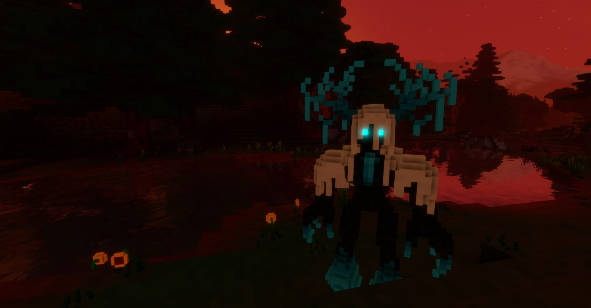 A fearsome wendigo encounter
Veloren is an open world, open-source voxel RPG inspired by Dwarf Fortress and Cube World.
In December, work has been done to create a website to better assist moderation in the game. Several months of project finances were done, and all of the data is publically visible. Work on Wyverns has continued, and lots of effort is being put into their wings. Some UI elements have changed location, both the bag and spellbook buttons were merged with other button bars.
Frost Gigas are another big item in the works. These creatures will be Veloren's world boss. Gigas will hopefully be the first of a numerous elemental giants to roam the open world of Veloren and will need a large group of players to be able to take it down and collect it's new uncraftable and legendary loot!
December's full weekly devlogs: "This Week In Veloren...": #201, #202, #203.
Thetawave
 First boss enemy in Thetawave
First boss enemy in Thetawave
Thetawave is an open-source, roguelite, physics-based, space shooter game made with Bevy and Rapier.
This month, the first boss enemy was added to the game. Unlike other enemies, it is composed of a single "mob" entity and 7 "mob segment" entities. It also uses behavior sequences to regularly change its active set of behaviors. You can follow @carlosupina on Twitter for regular updates about the game.
Jumpy
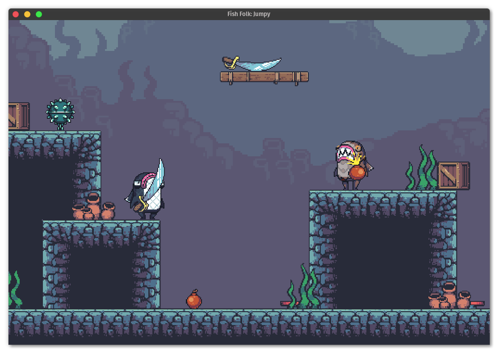 Jumpy Items: Swords, Crates, Grenades, & Mines
Jumpy (GitHub, Discord, Twitter) by Spicy Lobster is a pixel-style, tactical 2D shooter with a fishy theme.
In the last month, work started on a new architecture for the core Jumpy game loop.
Determinism and snapshot/restore functionality has been a challenge for networking support in jumpy. To address this, Jumpy has started migrating the core game loop to a custom, micro Entity Component System that is deterministic and can be trivially snapshot and restored.
By being simple and planning to eventually support a pure C API, it's also intended for the micro-ECS approach to make it vastly easier to create a performant modding interface to Jumpy in the future.
Work has almost been finished on the new Bones ECS and the surrounding Bones framework, which is still built on Bevy for rendering and otherwise talking to the hardware. The hope is that Bones can become a framework for making other games similar in scope to Jumpy, without those games have to re-invent everything that was needed to get features like UI, networking, localization, asset loading, etc.
As soon as the ECS migration is finished, the plan is to get the final game juicing and polish done and to make a proper MVP release.
Hydrofoil Generation
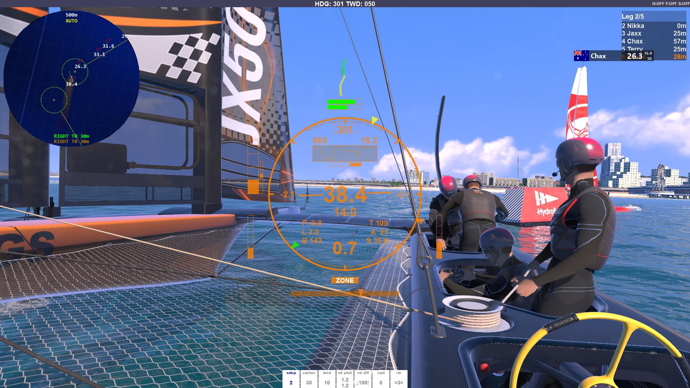
Hydrofoil Generation (Steam, Facebook, Discord) is a realistic sailing/foiling inshore simulator in development for PC/Steam that will put you in the driving seat of modern competitive sailing.
The game is written completely in Rust, using a custom engine based on DirectX 11, physics powered by Rapier-3D.
Jaxx Vane Studio army of 2, Stefano Casillo and Chax Duero is pushing through the final steps to get the game ready for Steam Early Access release.
As final QA approaches the team is at work to add the last level of polish and more details as possible to every aspect of the game.
A new Tutorial System has been added to introduce people with different backgrounds to the game as gently as possible making the learning curve of this complex simulator less steep.
Stefano is also back on Twitch streaming coding sessions live.
Hydrofoil Generation should be available on Steam in the first months of 2023.
Doomé
Doomé by Patryk Wychowaniec and Jakub Trąd is a GameOff'22 FPS game:
<...> the topic was cliché and our game is Doom meets Portal meets The Stanley Parable, with real-time raytraced graphics (that work plenty fast even on a CPU) and a 10-minute storyline!
The source code is available on GitHub. The game is written with a custom rust-gpu-based raytracer: strolle. Watch a talk from a recent Rust Wrocław's meeting to learn more about the implementation details.
You can play the game online and/or get binaries at itch.io.
Discussions: /r/rust
Combine&Conquer
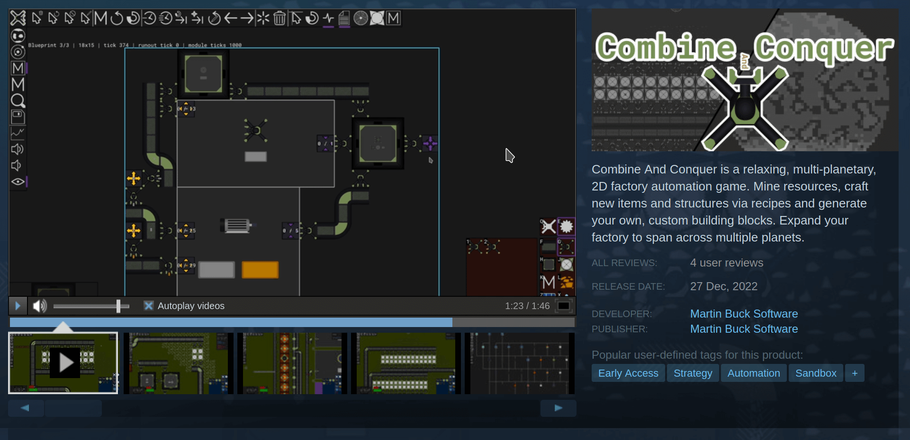
Combine&Conquer (itch.io, devlog, Discord) by Martin Buck is a WIP relaxing multi-planetary 2D factory automation game. This month's updates include:
- Early Access release on Steam.
- A bunch of minor v0.3.* versions with loads of bugfixes and small improvements in UX, rendering, etc.
Discussions: /r/rust_gamedev
triverse
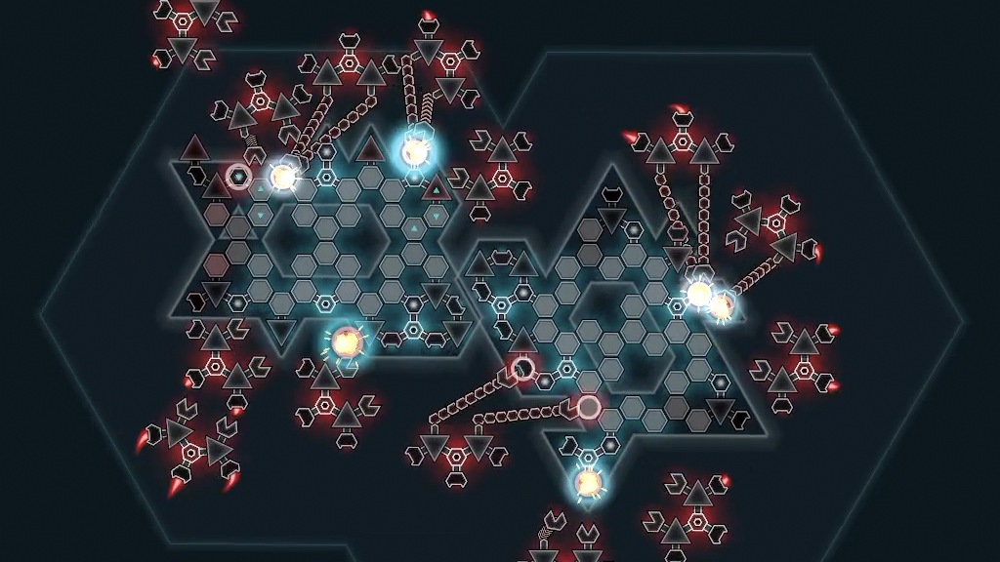
triverse by @cragwind is a WIP smart-pause RTS with custom unit creation on a triangle grid canvas.
In a distant star system, AI collectives vie for power. Assemble and control a self-replicating fleet to harvest resources, salvage wreckage, and defend your territory. Using modular parts, design ships to counter threats while balancing mobility, defense, and firepower.
You can find the detailed guide to playing here and play the web version on itch.io.
This month's updates include:
- Salvaging parts from wreckage using workers for building your own units.
- Torpedo launchers for taking out large or stationary targets.
Engine Updates
Fyrox
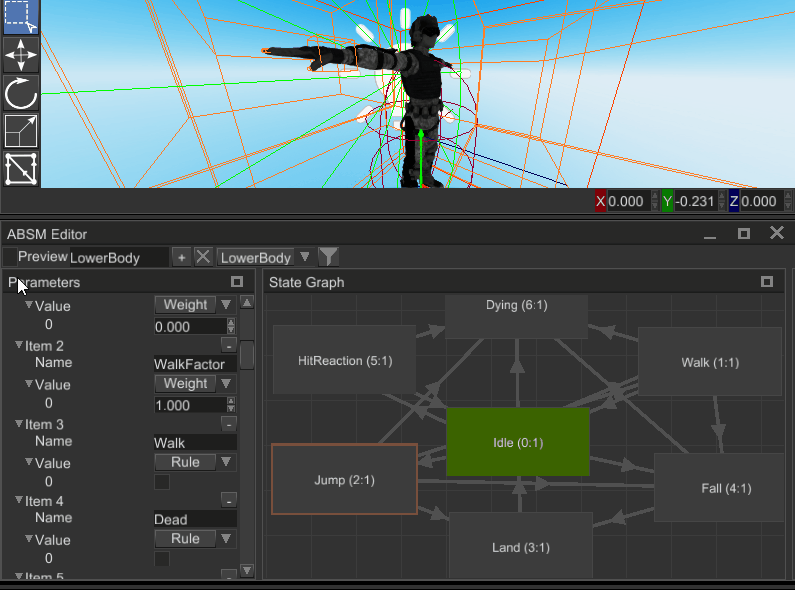
Fyrox (Discord, Twitter) is a game engine that aims to be easy to use and provide a large set of out-of-the-box features. In December it got a lot of new functionality and improved existing:
- Animation system rework is completed
- Animation and ABSM editors are now fully usable
- Reflection improvements
Copy Value as Stringfor Inspector- Ability to enable/disable scene nodes
- Customizable graph update pipeline
- UI Widgets improvements
- Curve editor improvements
- Lots of bug fixes
Runty8
Runty8 is an experimental port of the Pico8 fantasy console that supports writing games in Rust.
Runty8 has recently added support for WebAssembly, which means that you can now run your games in the browser!
Feel free to follow their template to start making your own games.
The project is in very early stages, and is currently looking for contributors. If you're interested, feel free to read their contributing guide or browse through the open issues.
Learning Material Updates
Rustacean Station: Presser with Gray Olson
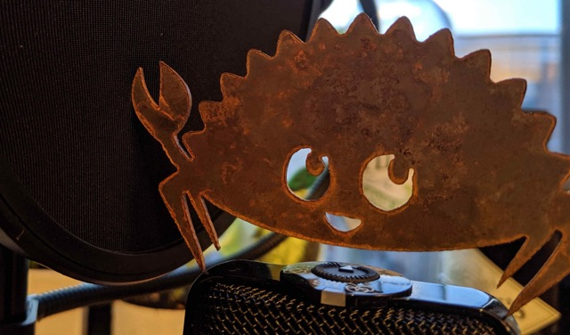
The Rustacean Station podcast interviewed Gray Olson, the developer of Presser - a library that aims to make it easier to safely work with byte buffers.
In this episode, Gray talks about art and graphic designing work for Embark Studio, computer graphics and ray tracing, memory allocation in Rust's virtual machine, and Embark's vision of Rust gamedev.
GLTF Animations in wgpu
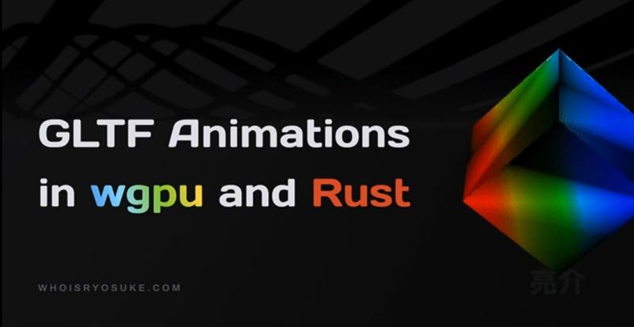
@whoisryosuke released a blog post on how to parse GLTF files in Rust, render them using wgpu, and play animations imported from Blender.
Create a Clicker Game with Macroquad
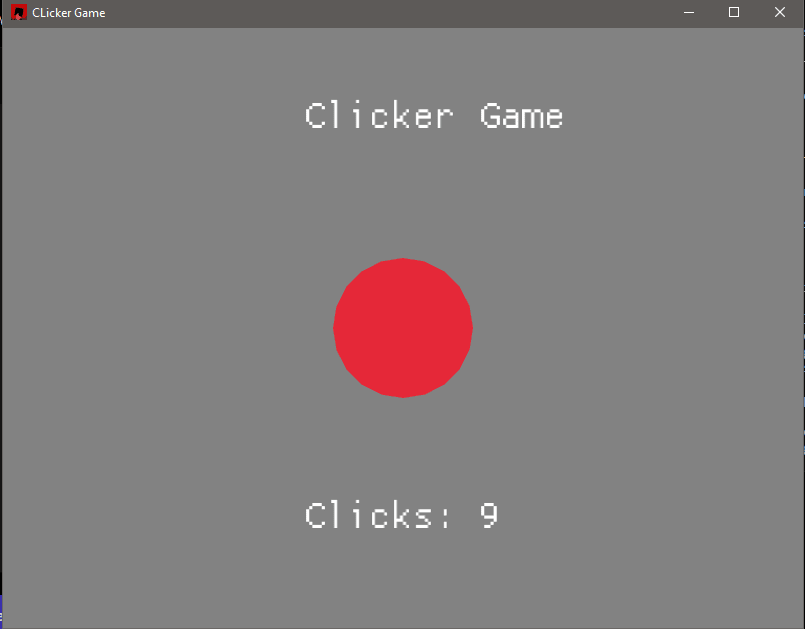
@Paper010 released a short two-part tutorial aimed at beginners who want to get started with game development with Rust and macroquad:
- The first part covers the minimal version of a clicker game.
- The second part explains how to play sounds and change colors.
The final source code is available on GitHub.
Tooling Updates
Graphite
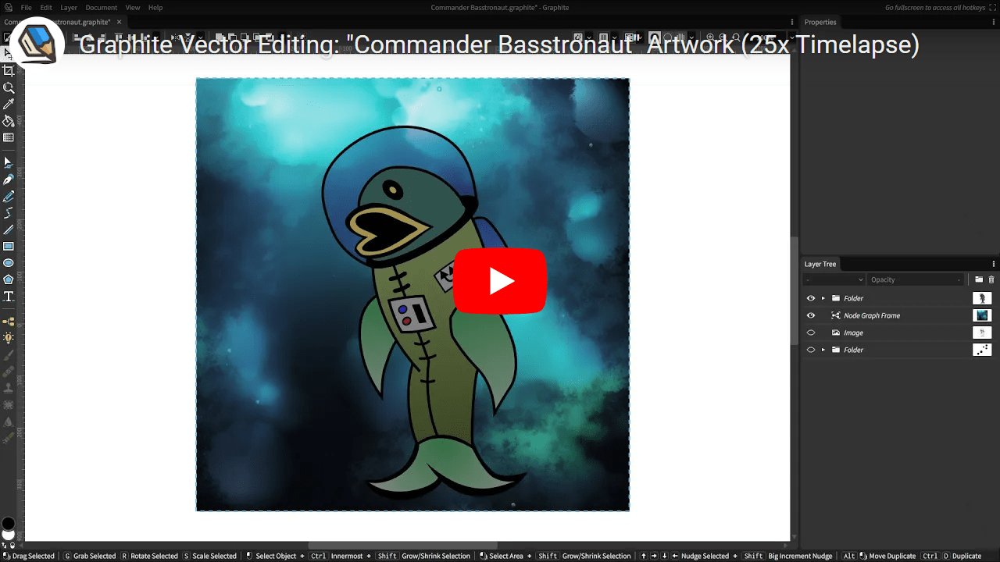 Video: 3-minute timelapse of a vector art piece illustrated in Graphite
Graphite (website, GitHub, Discord, Twitter) is a free, in-development raster and vector 2D graphics editor based around a Rust-powered node graph compositing engine.
December's sprint 21 introduces:
- Chain reaction: The Imaginate feature, an AI image generation workflow powered by Stable Diffusion, becomes a node. Chain together a sequence of fine-tuned generation steps. And explore ideas by branching the graph into new creative directions.
- Node nurturing: New features provide polish to the node graph. Nodes can be copy/pasted, hidden, previewed, and linked more easily.
- Bugs, begone!: A major effort to improve editor usability fixes dozens of bugs and paper cuts. Boolean shape operations now crash less frequently, the UI no longer slows down badly over time, and undo history is finally fixed.
Stay tuned for the imminent Alpha Milestone 2 release and progress converting existing features into nodes.
Open the Graphite editor in your browser to give it a try and share your creations with #MadeWithGraphite on Twitter.
Library Updates
Inox2d
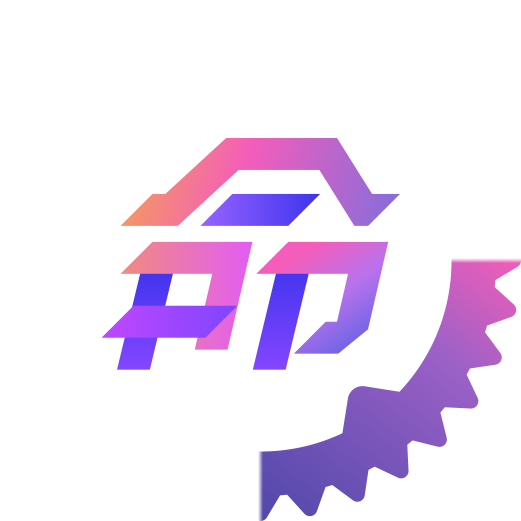
Inox2d (Discord) by the Inox2d Workgroup is an experimental official Rust implementation of the Inochi2D puppet animation technology. Inochi2d is notably used by the popular vtuber @AsahiLina.
Currently, Inox2d is still not on par with the reference implementation. Basic features like animations and a proper camera API have yet to be worked on.
Users who really want to use it should instead go with the reference implementation. If using Rust, through the official inochi2d-rs bindings.
Currently, Inox2d contributors are working on a WGPU renderer backend. They are also looking forward towards an official Bevy integration!
bevy_rpg
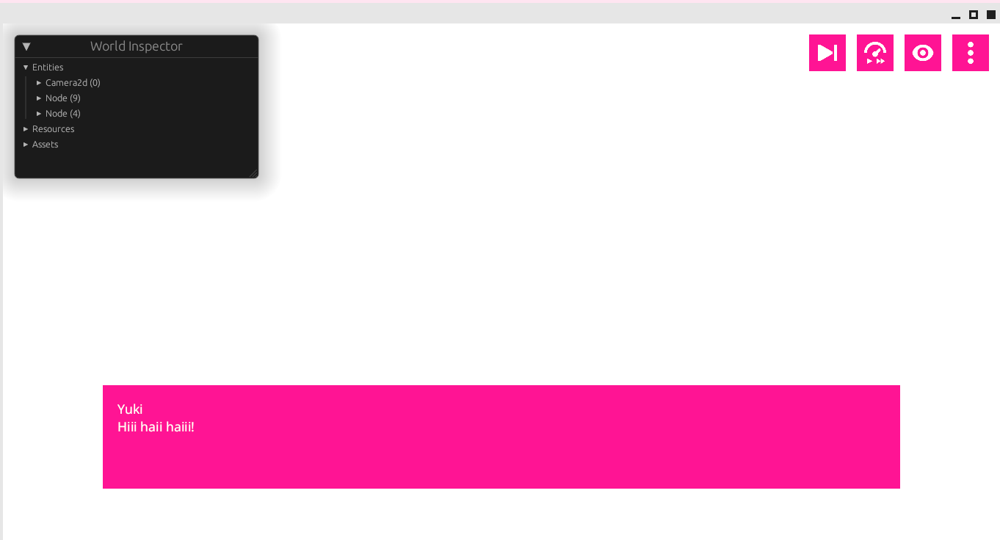
bevy_rpg (Discord channel) by @fianathedevgirl is a plugin allowing RPG or visual novel dialogs to be made with the Bevy game engine.
At the moment, it can be used for very basic dialogs. "Choose dialog" or text input dialog are still not implemented and the dialog controller buttons doesn't work yet.
If you are interested in seeing how it should be used in production, checkout "Project Flara". It's a prototype/demo game made by the same author showcasing a JRPG-ish indie game written in Rust. The author also made a basic example here.
lpcg
 A new library which generates character sprites
A new library which generates character sprites
lpcg (Crates.io, GitHub) by bux is a library which generates character sprites, based on assets from the Liberated Pixel Cup.
egui_dnd
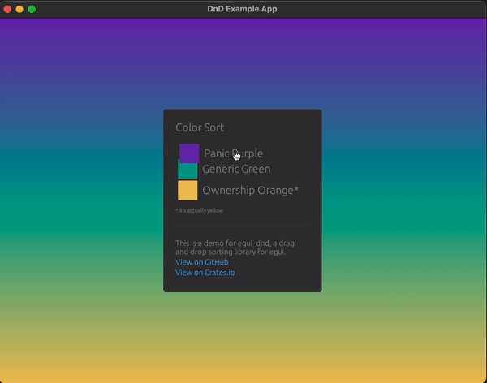 A showcase of egui_dnd
egui_dnd (github, crates.io) by @lucasmerlin is a new drag and drop sorting crate for egui. While egui itself includes some drag and drop support, it's not intuitive to use. This crate provides a simple abstraction over egui's drag and drop features.
The first release contains initial support for vertical sorting. If there is interest, more features could be added.
Discussions: /r/rust
bevy_rapier_collider_gen
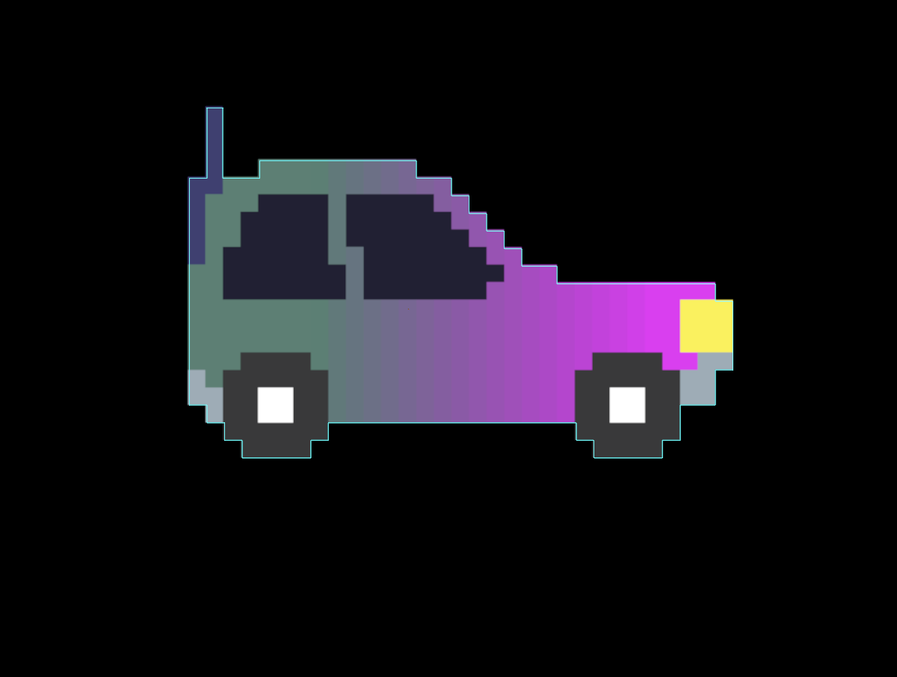
bevy_rapier_collider_gen by @shnewto is a library for generating bevy_rapier2d colliders for bevy apps, from images with transparency.
Features include out of box support for generating:
- Convex polyline colliders
- Polyline colliders
- Convex hull colliders
- Heightfield colliders
- Other colliders or geometries by getting edge coordinates in "drawing order"
- Multiple colliders from a single image
For more, in pictures, see the picture book retrospective "misadventures in collider generation".
Mun v0.4.0
Mun is a scripting language for gamedev focused on quick iteration times that is written in Rust.
The previous Mun release dates back over one and a half years. Since then - slowly but steadily - the Mun Community and Core Team have been working towards Mun v0.4.0 and it’s finally here!
Mun v0.4 does not only bring array support to Mun, but it also lays the groundwork for a plethora of language features that require indirect types and recursion. For a full list have a look at the changelog, but the main improvements are:
- Dynamically-sized arrays
- Simplified function invocations from Rust
- Simplified struct API for Rust
- Apple M1 & experimental iOS support
- Upgrade to LLVM 13
- Support for runtime usage in entity component systems (ECS)
rust-gpu v0.4.0
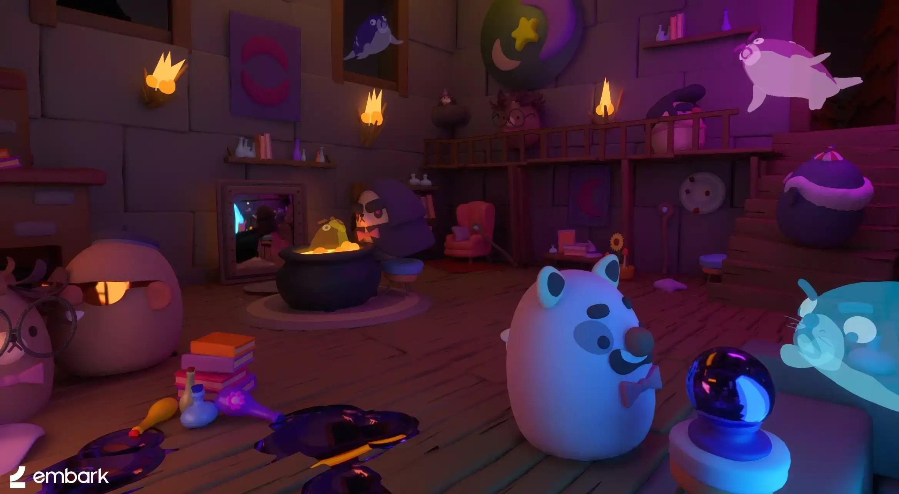 Embark's Creative Playground, which uses rust-gpu and raytracing
Rust-gpu (Discord) allows you to write your GPU shaders in the Rust language. It consists of a Rust compiler backend for generating SPIR-V shader modules and an API to address GPU resources.
Release v0.4.0 brings a lot of upgrades, bug fixes, maturity, and now also supports raytracing shaders! Furthermore, all dependent crates have been published to crates.io, so pointing to rust-gpu's GitHub in your Cargo.toml is no longer required.
Eager to get started? Check out the Dev Guide, or chat with the devs and the community on the public Discord server.
assets_manager
assets_manager (GitHub, crates.io) is a library to easily load and cache assets. It comes with support for multiple file formats and out-of-the-box hot-reloading.
The last release includes internals performance improvements and more flexibility in the way to load assets.
Ggez bindings were also updated to latest ggez version.
egui v0.20
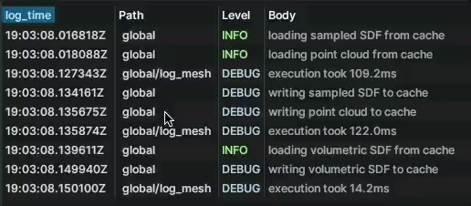
egui is an easy-to-use immediate mode GUI library in pure Rust.
This month egui v0.20 was released. Highlights:
- Support for AccessKit vastly improves the accessibility of eframe apps on Windows and Mac.
- Vastly improved tables (see above) for rerun.io's needs.
- Improved wgpu renderer that now allows using egui-wgpu on the web, with a WebGL backend.
- egui now expects integrations to do all color blending in gamma space.
- Interactive widgets can now be on top of other interactive widgets. Great for putting floating widgets on top of 3D content, for instance.
- ecolor helper lib for all the color conversions needs.
- Helper functions for animating panels that collapse/expand.
For full details see the changelog.
google/forma
forma by google is a (thoroughly) parallelized experimental Rust vector-graphics renderer with both a software (CPU) and hardware (GPU) back-end having the goals of portability, performance, simplicity, and minimal size. Forma relies on Rust's SIMD auto-vectorization/intrinsics and Rayon to have good performance on the CPU, while using WebGPU (wgpu) to take advantage of the GPU.
A few implementation highlights that make the library stand out from commonly used vector renderers:
- Curvature-aware flattening. All higher cubic Béziers are approximated by quadratic ones, then, in parallel, flattened to line segments according to their curvature. This technique was developed by Raph Levien.
- Cheap translations and rotations. Translations and rotations can be rendered without having to re-flatten the curves, all the while maintaining full quality.
- Parallel pixel grid intersection. Line segments are transformed into pixel segments by intersecting them with the pixel grid. We developed a simple method that performs this computation in O(1) and which is run in parallel.
- Efficient sorting. We ported crumsort to Rust and parallelized it with Rayon, delivering improved performance over its pdqsort implementation for 64-bit random data. Scattering pixel segments with a sort was inspired from Allan MacKinnon's work on Spinel.
- Update only the tiles that change (currently CPU-only). We implemented a fail-fast per-tile optimizer that tries to skip the painting step entirely. A similar approach could also be tested on the GPU.
While Forma is a general-purpose library it can be an interesting building block for vector-based games and engines (see the spaceship demo from the above image).
Discussions: /r/rust
Other News
- Other game updates:
- Ivy Sly renamed their online turn-based fighting game (and superpowered fight scene simulator) Yomi Hustle to "Your Only Move Is HUSTLE" due to a trademark infringement; The game also got a Steam page in preparation for the upcoming release in February.
- Orlando Valverde published a new version Pushin' Boxes that features a level editor.
- Dustin Carlino shared a retrospective of 2022 and 2023 plans for the A/B Street project.
- Paddlepunks got a new parry variation to homura that "pauses" the ball for a bit before reflecting it back harder than the regular parry
- @ollej released a web playable version of the macroquad port of the Infinite Bunner game.
- @kuviman released Flashdark - a small first-person horror game where you see the dark world using your flashdark and solve puzzles while avoiding the ghost.
- Fish Folk: Punchy v0.2 was released: Big Bass Boss has a new bomb toss attack, hitstop on damage application has changed, the beginnings of support for multiple attacks per fighter and attack chains are implemented, and players can now wear special hats.
- Red Life is a small game about an astronaut who is trying to survive in the hostile environment of Mars.
- @Tantan shared a vlog about a bug he had encountered during adding multiplayer to his voxel game.
- Life Code shared a vlog about making a user interface using egui with AI assistance.
- @enigmanark shared a bunch of updates about the RetrosicII shmup game.
- Other engine updates:
- square_wheel is a pretty advanced FPS-oriented software renderer for modern CPUs.
- Anthony Utt released new vlogs about the Alkahest engine progress: orthograthic cameras, transforms, textures, and scenes, and 2D render batching.
- Other learning material updates:
- Raph gave a talk about the vision for high performance UI implemented in Rust, and status of the current Xilem effort to build it. Includes sections on the piet-gpu 2D rendering engine, integration with AccessKit, and some details of the reactive architecture.
- PhaestusFox has posted more episodes of their 'Bevy Basics' tutorial series.
- Maciej Główka released a blog post on nuances of loading game data from TOML or JSON assets into Bevy-based games.
- Matthew Bryant released another Bevy Intro Tutorials YouTube video: "Compute Shaders in Bevy".
- Other tooling updates:
- uCrowds shared a video of a Rusty crowd simulation engine compiled to WASM and running a simulation of 150.000 agents in real-time in a browser.
- Other library updates:
- devices is a cross-platform library for retrieving information about connected devices, supports Linux and Windows.
- quad-svg is a small library for rendering .svg files to macroquad's Texture2D using resvg.
- @MatanLurey released mythoji - a minimal Rust crate that helps to identify and display fantasy appropriate emojis.
- durian is a general purpose client/server networking library that provides a "thin" abstraction layer on top of the QUIC protocol (using quinn) to make writing netcode extremely simple, automatically taking care of connection/streams management, byte details, packet framing/fragmentation/reassembly, parallel sender/receivers, etc.
- faer is a collection of crates that implement a low-level API for linear algebra routines that is somewhat similar to BLAS/Lapack, but gives more control to users by allowing parallelism to be specified on a per-call basis.
- bevy_adventure is a framework for building adventure games in Bevy that features GLTF support, multuple scenes with dynamic objects, inventory, and automatic camera animation.
Discussions
- /r/rust_gamedev:
Requests for Contribution
- 'Are We Game Yet?' wants to know about projects/games/resources that aren't listed yet.
- Graphite is looking for contributors to help build the new node graph and 2D rendering systems.
- winit's "difficulty: easy" issues.
- Backroll-rs, a new networking library.
- Embark's open issues (embark.rs).
- wgpu's "help wanted" issues.
- luminance's "low hanging fruit" issues.
- ggez's "good first issue" issues.
- Veloren's "beginner" issues.
- A/B Street's "good first issue" issues.
- Mun's "good first issue" issues.
- SIMple Mechanic's good first issues.
- Bevy's "good first issue" issues.
That's all news for today, thanks for reading!
Want something mentioned in the next newsletter? Send us a pull request.
Also, subscribe to @rust_gamedev on Twitter or /r/rust_gamedev subreddit if you want to receive fresh news!
Discuss this post on: /r/rust_gamedev, Twitter, Mastodon, Discord.